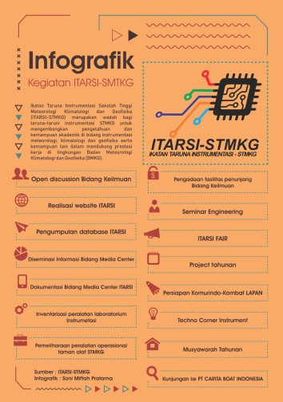

Menjadikan ITARSI-STMKG sebagai himpunan taruna yang satu, kompak, berkualitas, dan aktif melalui optimalisasi pengembangan potensi dengan didukung penguatan internal dan hubungan dengan pihak luar, serta pencitraan positif, dan partisipasi aktif seluruh Civitas Akademika Jurusan Instrumentasi STMKG.
